OPC UA with IEC 61499 Tutorial
This tutorial shows how you can use OPC UA in an IEC 61499 Application using available FBs. You should first complete the First Steps in 4DIAC Tutorial to get familiar with the 4diac IDE. FORTE uses the open62541 OPC UA stack which is open source and can also be used in commercial projects free of charge.
Tasks in this tutorial:
- Build FORTE with open62541
- Provide OPC UA variables to clients
- Offer an OPC UA method to be called by clients
- Create an OPC UA client in an IEC 61499 Application
- Create an OPC UA subscription from OPC UA Client to OPC UA Server in an IEC 61499 Application
Prerequisites:
Build FORTE with open62541
OPC UA is not enabled by default in FORTE. To enable it, you need to build FORTE with the open62541 source code yourself.
Attention: You need python installed on your computer in order to compile the OPCUA library.
Linux
- Download the FORTE source from http://git.eclipse.org/c/4diac/org.eclipse.4diac.forte.git:
$ mkdir ~/4diac && cd "$_"
$ git clone -b develop https://git.eclipse.org/r/4diac/org.eclipse.4diac.forte forte
$ cd forte && mkdir build
- Download the source for open62541 from https://github.com/open62541/open62541:
$ cd ~/4diac
$ git clone -b master https://github.com/open62541/open62541.git open62541
- Build open62541. If you are running the code on production devices we suggest setting the build type to Release.
$ cd ~/4diac/open62541 && mkdir build && cd $_
$ cmake -DBUILD_SHARED_LIBS=ON -DCMAKE_BUILD_TYPE=Debug -DUA_ENABLE_AMALGAMATION=ON ..
$ make -j
- Set FORTE to include open62541. If you are running the code on production devices we suggesst setting the build type to Release.
If you are using the 0.2 branch of open62541 make sure that you set the correct value for FORTE_COM_OPC_UA_VERSION=0.2
$ cd ~/4diac/forte/build
$ cmake -DCMAKE_BUILD_TYPE=Debug -DFORTE_ARCHITECTURE=Posix -DFORTE_MODULE_CONVERT=ON \
-DFORTE_COM_ETH=ON -DFORTE_MODULE_IEC61131=ON -DFORTE_COM_OPC_UA=ON \
-DFORTE_COM_OPC_UA_INCLUDE_DIR=$HOME/4diac/open62541/build \
-DFORTE_COM_OPC_UA_LIB_DIR=$HOME/4diac/open62541/build/bin \
-DFORTE_COM_OPC_UA_LIB=libopen62541.so \
-DFORTE_COM_OPC_UA_VERSION=master ..
$ make -j
Windows with Visual Studio
- Use a Git tool under Windows and download the FORTE source from http://git.eclipse.org/c/4diac/org.eclipse.4diac.forte.git and use the develop branch. The following steps show the commands for Git Bash:
$ mkdir "$HOME/4diac" && cd "$HOME/4diac"
$ git clone -b develop https://git.eclipse.org/r/4diac/org.eclipse.4diac.forte forte
$ mkdir build && cd "build"
- Use CMake to generate all the build files. Download and install: https://cmake.org/download/
- Open the $HOME/4diac/forte folder in CMake, and set the output for the build binaries to the forte/build
folder.
- Press Configure and select your Visual Studio Version. (Make sure you select your installed VS version. Otherwise CMake does not find the C/C++ compiler. Activate Use default native compilers
- Set FORTE_ARCHITECTURE to Win32, FORTE_MODULE_CONVERT=ON, FORTE_MODULE_IEC61131=ON, and press two times on cofigure. All red entries should now be gone.
- Download the source for open62541 from https://github.com/open62541/open62541. In Git Bash:
$ cd "$HOME/4diac"
$ git clone -b master https://github.com/open62541/open62541.git open62541
$ cd open62541 && mkdir build
- Build open62541. If you are running the code on production devices we suggest setting the build type to Release. Open a new CMake window and open the $HOME/4diac/open62541 folder as source code directory, $HOME/4diac/open62541/build as the binaries directory.
- Press Configure and select your Visual Studio Version. (Make sure you select your installed VS version. Otherwise CMake does not find the C/C++ compiler. Activate Use default native compilers
- Activate BUILD_SHARED_LIBS and UA_ENABLE_AMALGAMATION
- Press Configure, then Generate and then Open Project
- Go to . You may need to execute the command multiple times until all projects are build successfully. This will create the open62541 library under $HOME/4diac/open62541/build/bin/Release and the amalgamated header file open62541.h in $HOME/4diac/open62541/build/
- Switch to the FORTE CMake window to include open62541.
- FORTE_COM_OPC_UA=ON
- FORTE_COM_OPC_UA_INCLUDE_DIR=C:\Users\USER\4diac\open62541\build
- FORTE_COM_OPC_UA_LIB_DIR=C:\Users\USER\4diac\open62541\build\bin\Release
- FORTE_COM_OPC_UA_VERSION=master
- Press Configure and make sure that FORTE_COM_OPC_UA_LIB is set to open62541.dll
- Press Configure, then Generate and then Open Project
- Go to . You may need to execute the command multiple times until all projects are built successfully. This will create $HOME/4diac/forte/build/Debug/forte.exe
- In the forte VS Project, Set the PATH variable to include the path to the open62541.dll. Go to properties of forte, Configuration Properties | Debugging | Environment and add PATH=C:\Users\USER\4diac\open62541\build\bin\Release;%PATH% (Set the correct user path!)
OPC UA variables
Flip-Flop Application using Variables
In this step you will create a simple Flip-Flop Application, which uses Publisher and Subscriber function blocks to create Variables in the address space of the OPC UA Server. Clients can then read from those variables or write new values.
Follow the steps in the Blinking Tutorial to create a new System, Application, and Device. When you have created the empty Application, continue with the following steps.
In the following steps we create a Flip-Flop application where a boolean value is read from an OPC UA Variable and then its negated value published as another variable. To achieve this, we make use of SUBSCRIBE and PUBLISH function blocks. The SUBSCRIBE function block is used for subscribing to one or multiple OPC UA Variables, i.e., the value of the variable will be available in the Application. The PUBLISH function block is used to publish a value from within the Application so that it can be read by clients.
When the INIT event of those function blocks is triggered, the OPC UA server is initialized and started on the default endpoint url: opc.tcp://localhost:4840. Note that only one OPC UA server will be created and the address model is shared between all the function blocks.
- Drag the following function blocks from the Type Library into the Application Editor:
- events/E_SWITCH
- events/E_SR
- net/SUBSCRIBE_1
- net/PUBLISH_1
- Connect the function blocks in the following way:
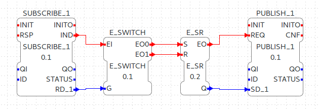
- Map the function blocks to the device
- Rename the E_SWITCH and E_SR function blocks, e.g. to Flipper and Flopper
- To configure where the variable nodes are created in the address space, you can use the ID fields of the SUBSCRIBE/PUBLISH function blocks. We want to create the variables under /Objects/FlipFlop, whereas the node FlipFlop should be created in cd namespace 1. Therefore we set the ID to opc_ua[/Objects/1:FlipFlop]. If you don't indicate the namespace explicitly (the 1:), then it will take the namespace 1 as default. QI has to be set to 1 to enable the function block.
- Open the System Editor and connect the COLD and WARM ports to the two INIT ports. So finally it should look like this:
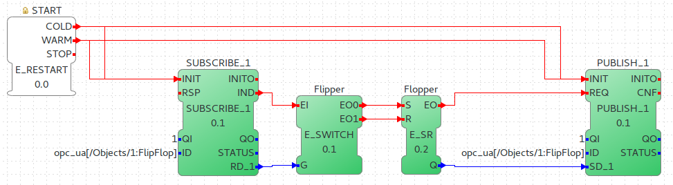
- Deploy the Application to FORTE
- Open UaExpert (you can get it from here) and connect to the OPC UA server running on FORTE: opc.tcp://localhost:4840
- You should see the two variables which have been created by the SUBSCRIBE and PUBLISH function blocks:
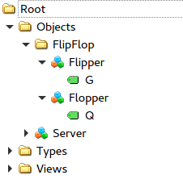
As you can see, below Objects there's a FolderObjectNode with the name FlipFlop. This name comes from the ID configuration of the function block. The two ObjectNodes Flipper and Flopper are created out of the connection of the function blocks: The SUBSCRIBE FB is connected through RD_1 with the G port of the Flipper FB. Therefore there's a VariableNode called G in Flipper ObjectNode. The same was created for the PUBLISH FB. The data type of the variables is derived from the FB's port datatype.
Note: You can change the name of the ObjectNode (i.e., Flipper, Flopper) by renaming the function blocks. Currently it is not possible to change the names of the VariableNodes. They will always have the name of the port.
- Optionally you can now monitor the Application in FORTE, e.g., watch the values of SUBSCRIBE and PUBLISH FB. See Use 4DIAC locally Tutorial - Monitor on how to do that.
- In UaExpert drag the two variables G and Q into the Data Access View. Here you can now change the value of
G. This will cause the IND port of SUBSCRIBE to fire an event and FORTE will read the new variable value, negate it and set Q to the negated value. The REQ event of the PUBLISH FB has to be triggered to set the new value from SD_1 in the address model of OPC UA. Note that in the beginning both values will be false since no event has been triggered yet.
- In FORTE check the monitored application to see what happens there if you change a variable.
Adder Application using Variables
Here you can see another example how to use SUBSCRIBE and PUBLISH to create an IEC 61499 application which adds two values, by reading the values from an OPC UA variable and providing the result.
If you followed the steps before you should be able to create a new Application which looks like this:
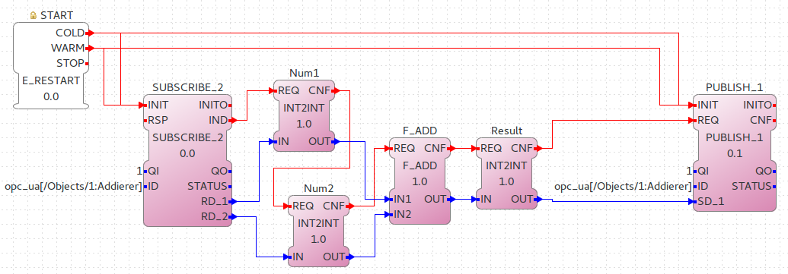
The F_ADD function block is a generic type which can have any supported data type for the IN1, IN2 and OUT ports. On the other hand the SUBSCRIBE and PUBLISH FBs need to now which datatype the created variables should have. To introduce this information into the application model, you can use the INT2INT converter function block. This will create the following nodes in the OPC UA Server:
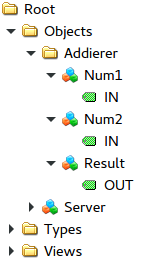
Try to understand from where the names for Num1, Num2, and Result come from.
You can then drag the variables into UaExpert's Data Access View and change the value of Num1/IN and Num2/IN. The value of Result/OUT should then be the sum of those two values.
Read and Write OPC UA variables on a remote server
This example shows you how you can use a PUBLISH function block to write to an OPC UA variable on a remote server, and how to use a CLIENT function block to read a variable value from a remote server.
Create a new System which includes two System Configurations: One for the remote server, and one for the local variable read/write. By running two FORTE instances on you local PC, it is possible to simulate the use-case where the server and client are in separate FORTE instances. The server could for example run on a device offering the variables, the client is then another device which requests information of the previous one.
To start two FORTE instances on the same PC, you can pass the port on the command line, e.g., ./forte -c localhost:61500
The system configuration should then look like this:
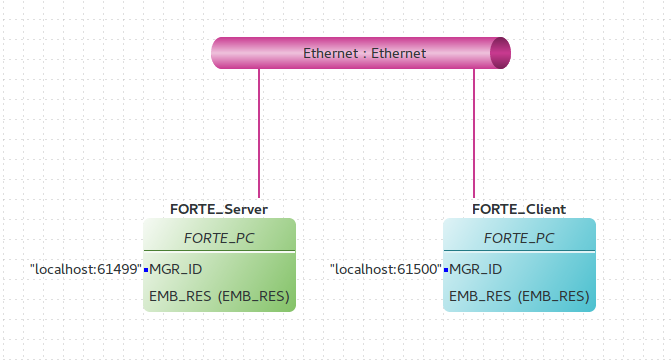
Then we create the follwing application. On the server side we create an OPC UA variable /Objects/1:Incrementer/Increment/IN (SUBSCRIBE_1). When a client writes to this variable, it will be incremented (F_ADD) and then written to another OPC UA variable at /Objects/1:Incrementer/Incremented/OUT (PUBLISH_1).
On the client side we create a PUBLISH FB (WRITE_INCREMENT) which should write a number to the variable on the remote server. To read the incremented value from the server, we use a CLIENT FB (READ_INCREMENTED), which reads the variable's value as soon as the REQ event is triggered.
Do not forget to connect the COLD/WARM events in the ressource view to the INIT event ports of the corresponding function blocks.

You can see that there are two PUBLISH function blocks in this APP: PUBLISH_1 and WRITE_INCREMENT. Depending on the ID parameter, they differ in their functionality. For PUBLISH_1 the ID does not include the OPC UA encpoint opc.tcp://localhost:4840 therefore the result will be an OPC UA server which offers a variable. WRITE_INCREMENT includes the encpoint in its ID field, therefore this FB will write the value from SD_1 to the variable indicated by the ID on the remote server.
The client FB supports calling methods (see following section) and reading variable values. Depending on the OPC UA node given by the ID parameter it will be automatically determined if the remote node is a Variable where the client should read from, or if it is a method which should be called.
NOTE: Currently open62541 does not support data change events, therefore you need to use polling to see if a variable has changed on the remote server. When data change events are supported, we will add support for that on SUBSCRIBE FBs.
OPC UA Methods
In this step you will see how you can create OPC UA methods in an IEC 61499 application. It uses the SERVER function block which creates the corresponding OPC UA method automatically in the address model.
Follow the steps in the First Steps in 4DIAC Tutorial to create a new System, Application, and Device. When you have created the empty Application, continue with the following steps.
- Drag the following function blocks from the Type Library into the Application Editor:
- 3x convert/INT2INT
- IEC61131-3/Arithmetic/F_ADD
- net/SERVER_1_2
- Map the function blocks to the device
- Connect the function blocks and rename them in the following way:
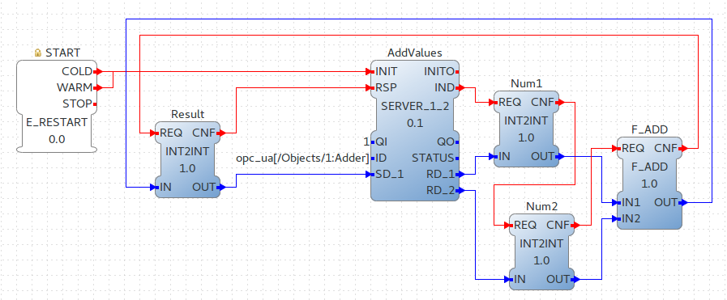
- The name of the SERVER FB, specified at its ID port, is at the same time the browse path of the Method which will be created in the OPC UA Server. The RD ports of the SERVER are the method's input arguments, the SD ports the output arguments.
- Deploy the Application to FORTE
- Open UaExpert and you should see the following address model:
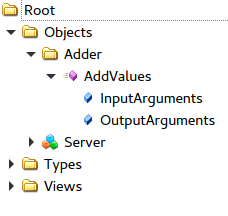
- Optionally you can again monitor the application in 4diac
- In UaExpert Right-Click on the Method Node AddValues and select Call... You will be presented with the following window:
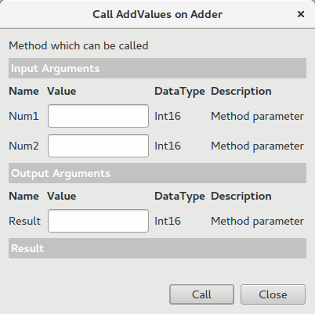
- You can see that the name of the input and output arguments are the names of the connected function blocks. Enter values for Num1 and Num2 and press Call. FORTE will trigger the IND event of the SERVER FB, which causes the F_ADD FB to calculate the sum of the two numbers. When the sum is ready, the RSP event on SERVER is triggered and the result is returned to the calling OPC UA Client, which is in this case UaExpert.
Note: After the IND event is triggered, the result has to be ready (i.e., the RSP event has to be triggered) within 4 seconds. This is the default timeout for a method call. Otherwise the call will fail with a timeout error code.
OPC UA Client
In this step you will see how you can create an OPC UA client in an IEC 61499 application. A client is used to call methods on an OPC UA server and to write new values to variables. It uses the CLIENT function block which is able to call methods asynchronously.
We will create a client which calls the AddValues method from the previous example. Therefore we extend the OPC UA methods example by adding additional function blocks.
- Drag the following additional function blocks from the Type Library into the already existing AddValues example from the previous step:
- 3x convert/INT2INT
- net/CLIENT_2_1
- Map the function blocks to the device
- Connect the function blocks and rename them in the following way:
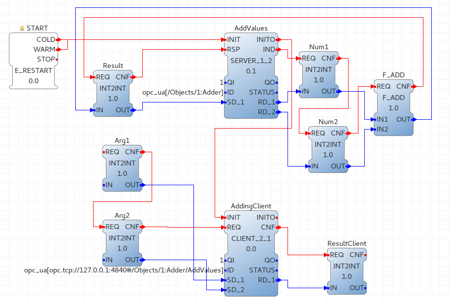
- The method to be called is indicated in the ID field of the CLIENT FB. The SD ports of the CLIENT are the method's input arguments, the RD ports the output arguments. SD_1 is the first input argument for the method, and so on. The name of the INT2INT block is currently not used, so only the order is important. Additionaly, you need to make sure that the data type of the SD and RD ports matches the types from the OPC UA method you want to call. Use the corresponding conv FBs for that, as we did in this example.
- Deploy the Application to FORTE
- Monitor the application in 4diac to be able to set the two arguments for the client and fire the event
- Then set IN of Arg1 to INT#3, and for Arg2 to INT#5. Right-Click on Arg1 → REQ and select Trigger Event
- This will trigger the client to call the add method on the server and gives back the result of the addition as RD_1
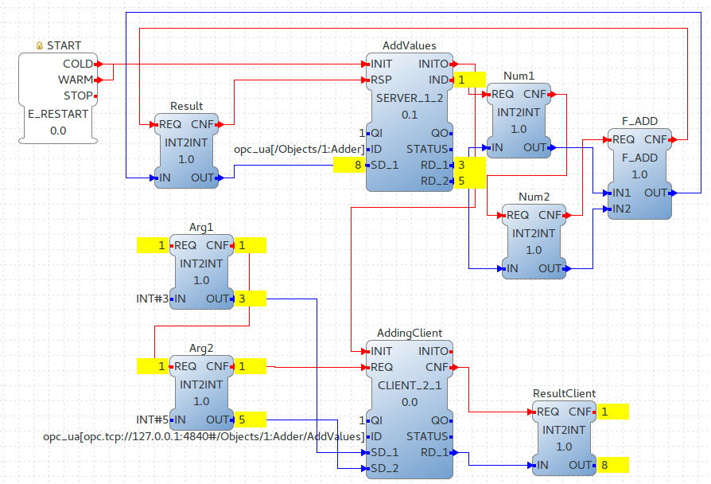
OPC UA Client Subscriptions
In this step you will see how you can create an OPC UA data subscription in an IEC 61499 application. A client is used to set up a data subscription to variables on an OPC UA server to get the value changes as they appear on the server. It uses the SUBSCRIBE function block which is able to remotely subscribe to the variable value changes.
We will create a client which subscribes to the Incrementer/Incremented/OUT value from example described above. Therefore we extend the OPC UA variables example by adding subscription function block to monitor the value change.
- We change the CLIENT function block used to read variable in the previous example with a SUBSCRIBE function block, so that client gets the updated value automatically without a need to actively trigger read functionality
- Map the function blocks to the device
- Connect the function blocks and rename them in the following way:
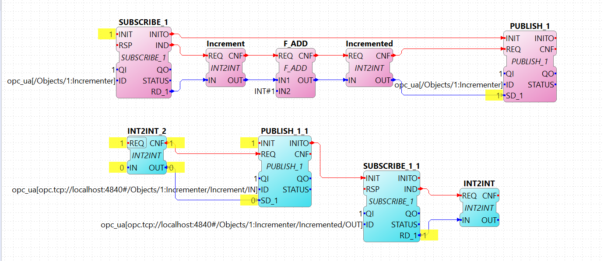
- The browse path of the node, on which value the client needs to subscribe, is indicated in the ID field of the SUBSCRIBE FB. Note, that for the opc ua subscriptions only SUBSCRIBE_1 FB can be used. The RD_1 port of the SUBSCRIBE is the current value of the subscribed node. Additionaly, you need to make sure that the data type of the RD port matches the types from the OPC UA variable you want to subscribe to. Use the corresponding conv FBs for that, as shown in this example.
- Deploy the Application to FORTE
- If the value you subscribed for has changed on the server, an updated value will appear at RD_1 port
Where to go from here?
Go back to Protocols index:
Communication Index
If you want to go back to the Start Here page, we leave you here a fast access
Start Here page
Or Go to top